综述九：Mamba及其变体
SSM模型
Transformers are RNNs: Fast Autoregressive Transformers with Linear Attention (20/06)
论文地址
核心思想：将自注意表示为核特征图的线性点积，并使用矩阵乘法的结合属性将复杂度从 减少到 ，其中N是序列长度。我们证明，这个公式允许迭代实现，大大加速了自回归Transformers，并揭示了它们与循环神经网络的关系。(一种涉及循环的自我注意近似，可以看作是退化的线性SSM)
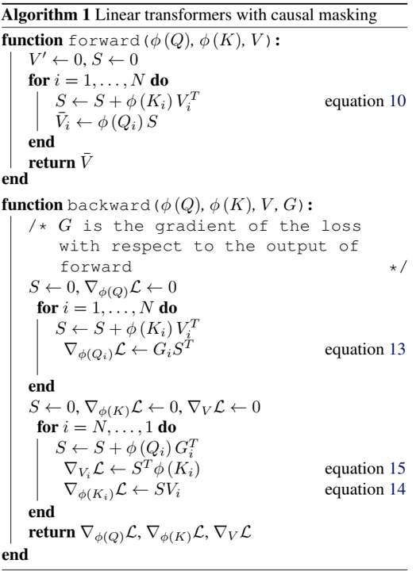
Hungry Hungry Hippos: Towards Language Modeling with State Space Models (22/12)
论文地址
核心思想：状态空间模型（SSMs）已经在一些模态中展示先进的序列建模性能，但在语言建模中落后于注意力。而且，尽管近乎线性地而不是二次的序列长度缩放，由于硬件利用率低，SSMs仍然比Transformers慢。本文中，理解语言建模中SSM和注意力之间的表现力差距，以及减小SSMs和注意力间的硬件阻碍。发现现有的SSM在两个方面存在困难：一是回忆序列中的早期标记，二是比较整个序列中的比较。为了理解对语言建模的影响，提出了一个新的SSM层H3，它是专门为这些能力设计的。接下来，为了提高在现代硬件上训练SSM的效率，提出了FlashConv。FlashConv使用融合块FFT算法来提高高达8K序列的效率，并引入了一种新的状态传递算法，该算法利用SSM的循环特性来扩展到更长的序列。(将循环推广到S4，可以视为由两个门控连接夹着SSM的架构。H3还在主SSM层中插入标准局部卷积，将其定义为shift-SSM。)
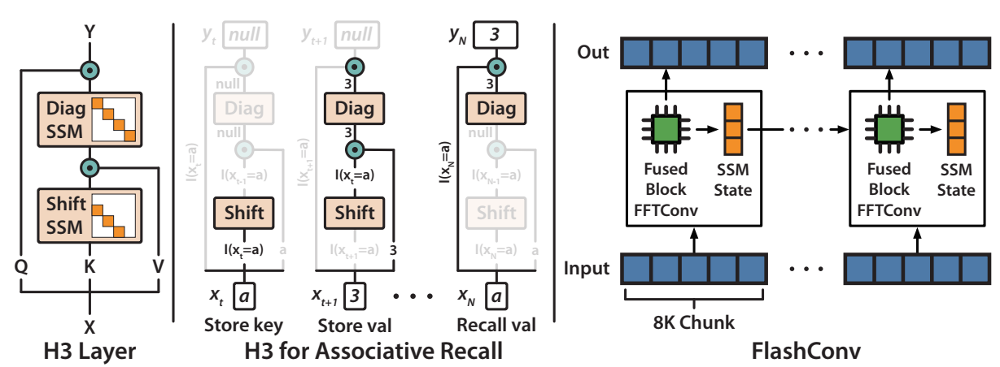
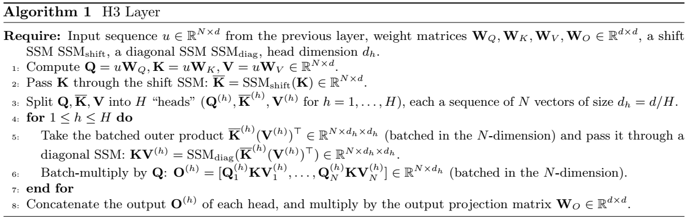
Hyena Hierarchy: Towards Larger Convolutional Language Models (23/02)
论文地址
核心思想：深度学习的近期发展严重依赖大型Transformers，由于它们的大规模学习能力。然而，Transformers的核心构建模块，注意力操作，在序列长度上表现出二次成本，限制了可访问的上下文数量。基于低秩和稀疏近似的现有次二次方法需要与密集的注意力层相结合，以匹配Transformers，表明能力存在差距。在这项工作中，提出了Hyena，这是一种通过交织隐式参数化长卷积和数据控制门控构建的次二次直接注意力替代方案。在数千到数十万个标记序列的召回和推理任务中，Hyena与依赖状态空间和其他隐式和显式方法的操作相比，将准确性提高了50多个点，与基于注意力的模型相匹配。（与H3使用同样的架构，但使用MLP参数化的全局卷积替换了S4层。）
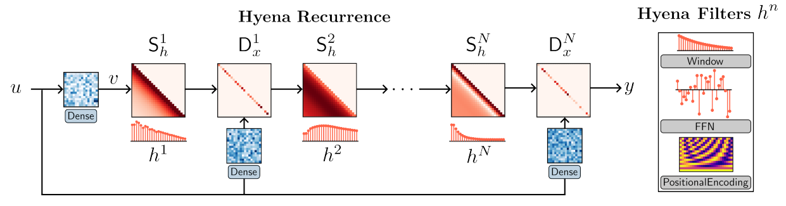
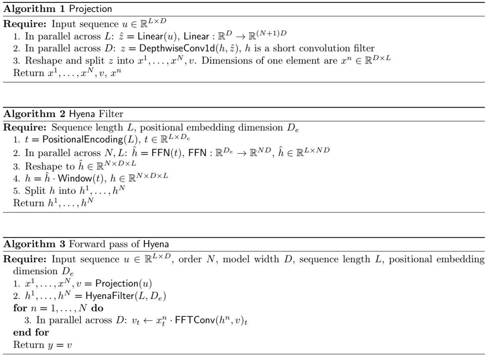
Retentive Network: A Successor to Transformer for Large Language Models (23/07)
论文地址
核心思想：在这项工作中，提出了Retentive Network（RETNET）作为大型语言模型的基础架构，同时实现了训练并行性、低成本推理和良好的性能。从理论上推导出循环和注意力之间的联系。然后，提出了序列建模的保留机制，该机制支持三种计算范式，即并行、递归和分块递归。具体来说，并行表示允许训练并行性。循环表示实现了低成本的O（1）推理，在不牺牲性能的情况下提高了解码吞吐量、延迟和GPU内存。分块递归表示有助于以线性复杂度进行高效的长序列建模，其中每个块都是并行编码的，同时对块进行递归总结。语言建模的实验结果表明，RETNET实现了良好的缩放效果、并行训练、低成本部署和高效推理。这些有趣的特性使RETNET成为大型语言模型Transformer的有力继承者。代码 https://aka.ms/retnet 。 （架构中添加额外的门控，并使用更加简单的SSM，允许候选的可并行计算路径，使用多头注意力（MHA）的变体，而不是卷积。）
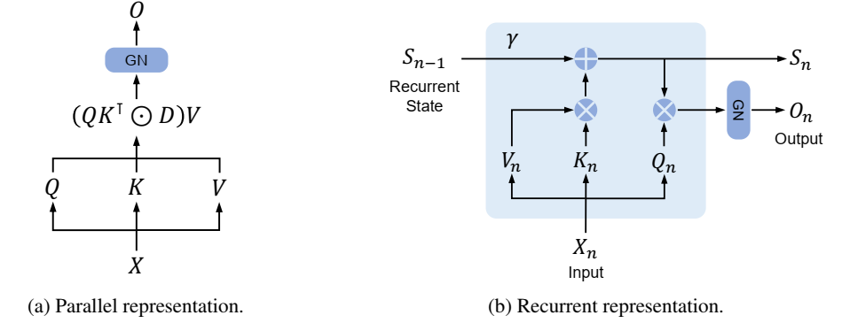
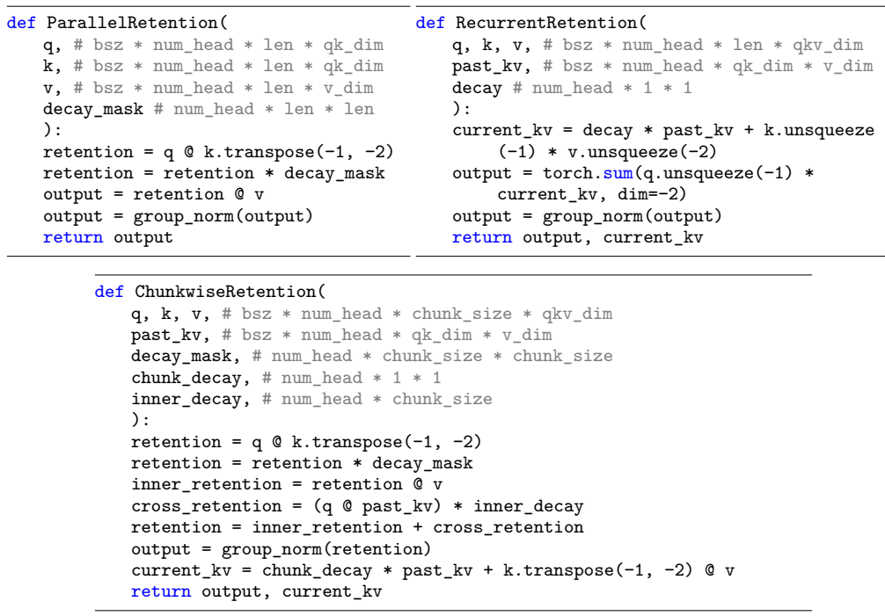
RWKV: Reinventing RNNs for the Transformer Era (23/05)
论文地址
核心思想：Transformer 彻底改变了几乎所有的自然语言处理 (NLP) 任务，但其内存和计算复杂度却随序列长度呈二次方增长。相比之下，循环神经网络 (RNN) 在内存和计算要求方面表现出线性扩展，但由于并行化和可扩展性的限制，难以达到与 Transformer 相同的性能。我们提出了一种新颖的模型架构，即接受加权键值 (RWKV)，它将 Transformer 的高效并行训练与 RNN 的高效推理相结合。方法利用了线性注意机制，并允许我们将模型制定为 Transformer 或 RNN，从而在训练期间并行计算，并在推理期间保持恒定的计算和内存复杂度。将模型扩展到 140 亿个参数，这是迄今为止训练过的最大的密集 RNN，并且发现 RWKV 的性能与类似大小的 Transformer 相当，这表明未来的工作可以利用这种架构来创建更高效的模型。这项工作为在序列处理任务中协调计算效率和模型性能之间的权衡迈出了重要一步。（一种最近的额RNN，旨在语言建模，基于另一种线性注意力近似，无注意力的Transformer。其主要的“WKV”机制设计LTI循环，可以视为两个SSMs的比率。）
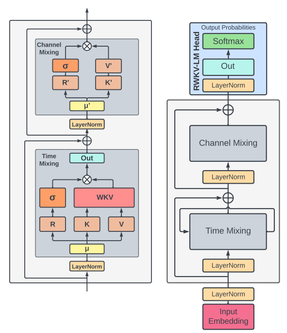
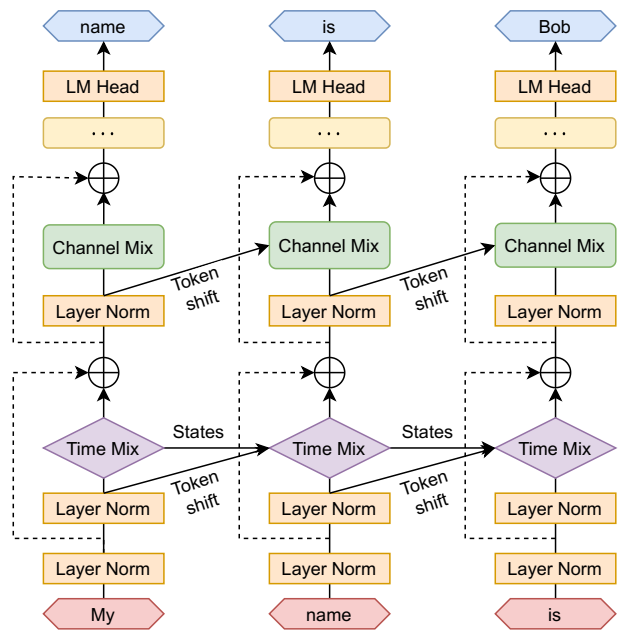
On the Parameterization and Initialization of Diagonal State Space Models (22/06)
论文地址
核心思想：状态空间模型作为深度学习层被证明可以有效作为RNNs、CNNs或者Transformers等序列模型的有前途的替代。S4模型首个展示这种潜力，通过使用称为HiPPO矩阵的规定状态矩阵，在涉及远程依赖的任务上特别有效。虽然这有一个可解释的数学机制来建模长依赖关系，但它引入了一种难以实现的自定义表示和算法。另一方面，S4的一个最新变体DSS表明，在使用基于近似S4矩阵的特定初始化时，将状态矩阵限制为完全对角仍然可以保持原始模型的性能。这项工作试图系统地理解如何参数化和初始化这种对角状态空间模型。虽然从经典结果可以得出几乎所有SSM都具有等效的对角线形式，但文章表明初始化对性能至关重要。最终模型S4D是S4的简单对角线版本，其内核计算只需要2行代码，在几乎所有设置下的性能都与S4相当。
主要贡献：
- 首先，描述了S4D，这是一种由S4提出的计算对角而不是DPLR矩阵的简单方法，它基于Vandermonde矩阵乘法，甚至比DSS更简单、更高效。在核心状态矩阵之外，对SSM其他组件的不同表示进行了分类，引入了灵活的设计选择，这些选择同时捕捉了S4和DSS，并允许系统地比较不同的SSM参数化。
- 对DSS的初始化进行了新的数学分析，表明当状态大小变为无穷大时，原始HiPPO矩阵的对角近似令人惊讶地产生了与S4相同的动态。我们提出了使用不同状态矩阵初始化的对角SSM的更简单变体。
- 对许多领域、任务和序列长度的这些不同设计选择进行了对照研究，并比较了对角线（S4D）和DPLR（S4）变体。最好的S4D方法在几乎所有设置上都与S4具有竞争力，在图像、音频和医疗时间序列基准测试上接近最先进的结果，在Long Range Arena基准测试中达到85%。
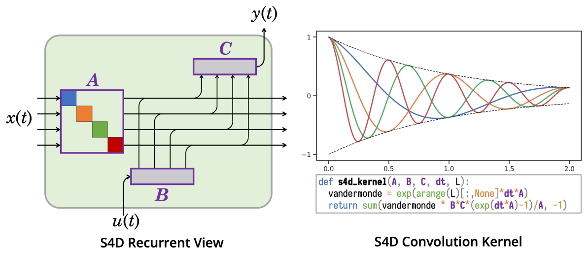
Effectively Modeling Time Series with Simple Discrete State Spaces (23/03)
论文地址
核心思想：时间序列建模方法通常需要（1）丰富表示复杂依赖（2）预测长视野（3）在长序列上高效训练。状态空间模型（SSMs）是用于时间序列的经典模型，以及先前工作结合SSMs和深度学习层来有效序列建模。然而，这些方法具有根本性限制：它们的SSM表示不能表达自回归时间序列过程。因此，引入SPACETIME，一种新的状态空间时间序列架构，改进所有三种标准。对于表达能力，提出一种新的基于伴随矩阵（离散时间过程的规范表示）的SSM参数化，实现SPACETIME的SSM层可以学习期望的自回归过程。对于长视野预测，引入伴随SSM的“closed-loop”变体，实现SPACETIME可以预测许多未来的时间步，通过生成其自身的分层输入。对于高效训练和推理，引入一种通过伴随矩阵减少前向传递中内存和计算的算法。对于序列长度 和状态空间大小d，从 变为 。
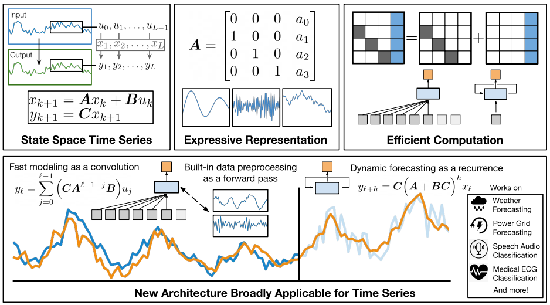
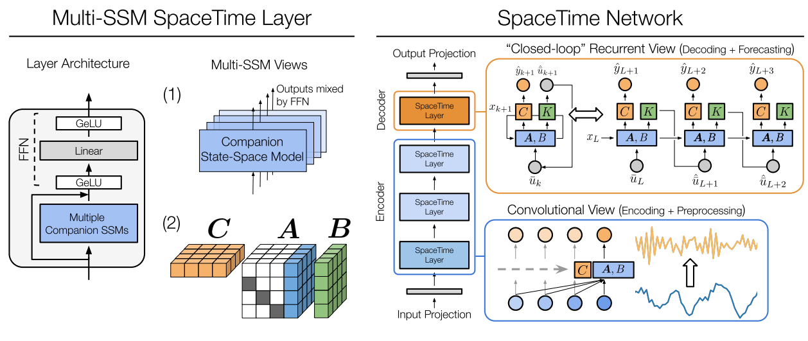
Efficiently Modeling Long Sequences with Structured State Spaces (21/11)
论文地址
核心思想：序列建模的中心目标是设计单一原则模型，解决一系列模态和任务的序列数据，尤其是远程依赖。虽然传统模型，包括RNNs、CNNs和Transformers拥有专门的捕捉远程依赖的变体，它们难以扩展到非常长的10000或更多步的序列。最近一项有前途的方法提出通过模拟基本状态模型 （SSM） 建模序列，并表明，选择适当的状态矩阵A，该系统可以在数学和经验上处理远程依赖。然而，该方法有严重计算和内存需要，使其不适合作为通序列建模方案。提出结构化状态空间模型（S4），基于SSM的新的参数化，表明，可以比先前方法更高效计算，同时保留理论能力。技术涉及用低秩校正来调节A，使其能够稳定地对角化，并将SSM简化为柯西核的充分研究计算。
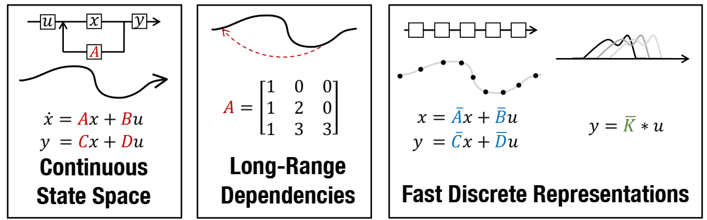
Simplified State Space Layers for Sequence Modeling (22/08)
论文地址
核心思想：使用结构化状态空间序列（S4）层的模型在远程序列建模任务上取得先进性能。S4层结合线性状态空间模型（SSMs）、HiPPO框架，和深度学习取得高性能。构建在S4之上，引入新的状态空间层，S5。鉴于S4层使用许多独立的单一输入、单一输出的SSMs，S5层使用一个多输入、多输出的SSM。文中构建了S5和S4之间的连接，用于开发S5模型使用的初始化和参数化。其结果是，状态空间层可以利用高效且广泛实施的并行扫描，使S5的计算效率与S4相匹配，同时在几个远程序列建模任务上实现了最先进的性能。
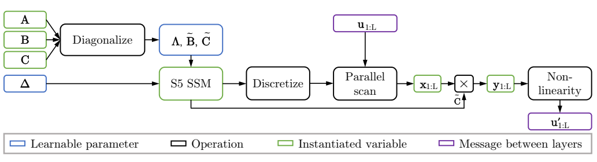
Structured State Space Models for In-Context Reinforcement Learning (23/03)
论文地址
核心思想：S4模型最近在远程序列建模任务上取得先进性能。这些模型还具有快速推理速度和并行化训练，使得它们在许多强化学习设置中具有潜在用途。提出S4变体的改进，使得可以并行地初始和重置隐藏状态，允许解决强化学习任务。经证明，改进的架构在序列长度上比Transformers渐近运行得更快，在简单的基于内存的任务上比RNN表现更好。在一组部分可观察的环境中评估了修改后的架构，发现在实践中，模型表现优于RNN，同时运行速度也快了五倍多。然后，通过利用模型处理长距离序列的能力，在具有挑战性的元学习任务中取得了很好的性能，在该任务中，智能体被给予一个随机采样的连续控制环境，并结合了环境观察和动作的随机采样线性投影。此外，证明了所得到的模型可以适应未分配的任务。总体而言，本文的研究结果表明，结构化状态空间模型对于上下文强化学习任务来说是快速和高效的。代码https://github.com/luchris429/s5rl 。
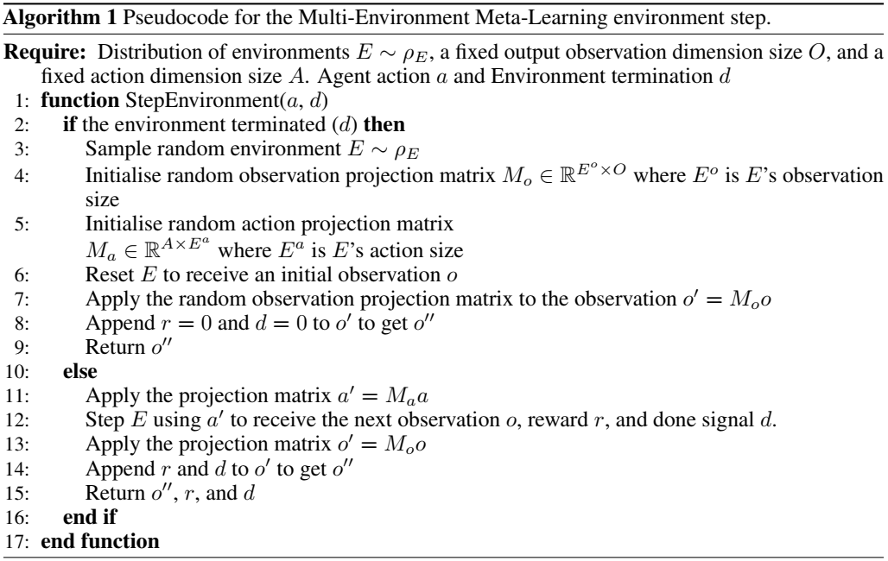
GateLoop: Fully Data-Controlled Linear Recurrence for Sequence Modeling (23/11)
论文地址
核心思想：线性递归已被证明是有效建模长序列的强大工具。在这项工作中，我们表明现有的模型未能充分利用其潜力。受这一发现的启发，我们开发了GateLoop，这是一种基础序列模型，通过采用数据控制的状态转换来推广线性递归模型，如S4、S5、LRU和RetNet。利用这一理论进步，GateLoop在经验上优于现有的自回归语言建模模型。我们的方法具有低成本的 循环模式和高效的 并行模式，其中l是序列长度，利用了高度优化的关联扫描实现。此外，我们推导出了一个 替代(surrogate)注意力模式，揭示了它对Transformer和最近提出的架构的显著影响。具体来说，我们证明我们的方法可以被解释为向注意力提供数据控制的相对位置信息。虽然许多现有的模型仅依赖于数据控制的累计和进行上下文聚合，但我们的研究结果表明，整合数据控制的复杂累积乘积可能是迈向更强大的序列模型的关键一步。
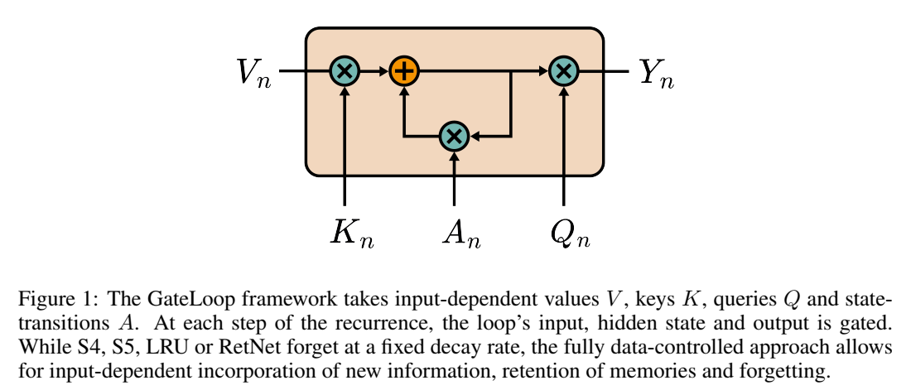
Mamba模型
Mamba: Linear-Time Sequence Modeling with Selective State Spaces (23/12)
核心思想：大多数预训练基础模型都是基于Transformer，自注意力能够在上下文窗口中密集地路由信息，允许其建模复杂数据。但，无法建模有限窗口外的事物，且随着窗口长度二次缩放。结构化状态空间序列模型（SSMs）可视为循环神经网络（RNNs）和卷积神经网络（CNNs）的组合，可以作为循环（常量推理）或者卷积（并行训练）高效计算，具有线性或近线性的序列长度缩放。此外，它们有原则性的机制来模拟某些数据模式中的长期依赖关系。
主要贡献：
- 选择机制。识别先前模型的关键限制：无法以输入依赖的方式有效选择数据（即，关注或忽略特定的输入），通过基于输入参数化SSM参数，设计了简单的选择机制，允许模型过滤不相干信息，并无限期地记住相关信息。
- 硬件感知算法。在结构化状态空间模型中加入选择机制，对模型计算提出挑战。事实上，所有先前的SSMs模型必须是时间和输入不变的，从而高效计算。为此，提出硬件感知算法，使用扫描循环计算模型，而不是卷积，而且不实体化扩展状态以避免不同GPU内存层次结构级别的IO访问。
- 架构。通过组合先前SSM架构的设计和Transformers中的MLP模块到单一模块，简化了先前深度序列模型架构，形成一个结合选择性状态空间的简单同质的架构设计（Mamba）。

Transformers are SSMs: Generalized Models and Efficient Algorithms Through Structured State Space Duality (24/05)
核心思想：虽然Transformers已经成为深度学习在语言建模中成功的主要架构，状态空间模型（SSMs），如Mamba，近期被证明在小到中尺寸匹配或超越Transformers。我们证明，这些模型系列实际上是非常紧密相关的，并在SSMs和注意力变体之间开发一个丰富的理论联系框架，通过对一类研究良好的结构化半可分矩阵的各种分解来联系。我们的状态空间对偶性（SSD）框架允许我们设计新的架构（Mamba-2），其核心层是Mamba的选择性SSM的优化，速度快2-8倍，同时继续在语言建模中与Transformers具有可比性。
贡献：
- 证明，状态空间模型和良好定义的一组称为半可分矩阵的结构化矩阵之间的等价性。该联系是SSD框架的核心，揭示了SSMs新特性和算法。本文的核心信息是：计算状态空间模型的不同方法，可以重塑为，在半结构化矩阵上的，各种矩阵乘法算法。
- 显著改进线性注意力（Transformer are RNNs）的理论。首先通过张量收缩语言提供其循环形式的有利证明，并且将其推广到一组新的结构化掩码注意力（SMA）。
- 连接SSMs和SMA，表明，它们具有大量交互，彼此对偶，同时拥有类似SSM的线性和注意力的二次形式。还证明，任意具有快速循环形式的核注意力方法必须是SSM。
STUFFED MAMBA: State Collapse and State Capacity of Rnn-Based Long-Context Modeling (24/10)
论文地址
核心思想：循环神经网络（RNNs）超越基于transformer的语言模型的关键优势在于它们关于序列长度的线性计算复杂度，使得它们在处理长序列推理中更加快速。然而，大多公开可用的RNNs（如，Mamba和RWKV）在少于10K标记的序列上训练，它们在更长上下文中的有效性目前仍极为不满意。在本文中，我们研究了RNN无法处理长上下文的原因，并提出了关键的缓解措施。我们研究了将最先进的RNN应用于长上下文时的两个实际问题：（1）无法推断长于训练长度的输入；（2）内存容量的上限。为了解决第一个问题，我们首先研究了状态崩溃（SC），这是一种在训练过程中没有遇到的序列长度上导致严重性能下降的现象。通过对照实验，我们将其归因于训练长度对循环状态的过度拟合。对于第二个问题，我们在长文档上训练了一系列Mamba-2模型，以实证估计语言建模和密钥检索中的循环状态容量。然后，提出了三种SC缓解方法来提高Mamba-2的长度泛化能力，使模型在没有SC的情况下处理超过1M个令牌。我们还发现，密钥检索中的循环状态容量与状态大小呈指数关系，我们在256K上下文长度上实证训练了一个具有接近完美密钥检索精度的Mamba-2 370M。这表明基于RNN的长上下文建模前景广阔。